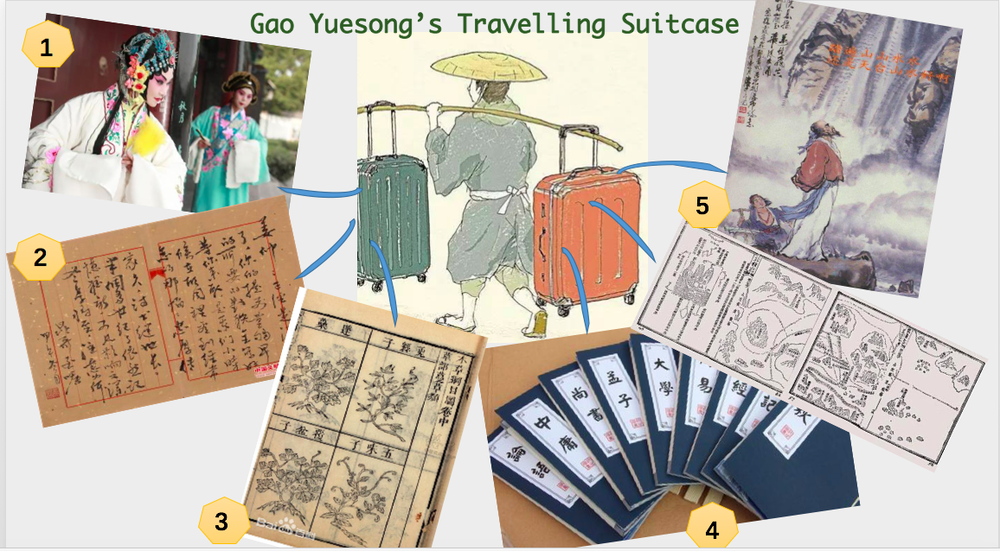

Gao Yuesong's suitcase
Gao Yuesong needs to travel all the way from Xi'an to Beijing to take the national imperial exam. Here are his suitcases and we found few personal items in it, can you find any clues what they are and why they are in his suitcase?
1. A picture of an actress acting Du Liniang. (Hint: She's a fictional character from a famous play written by Tang Xianzu in the Ming Dynasty - The Peony Pavilion)
2. A letter from his uncle who works in the government saying that the prime minister will lost his job soon. (Hint: The emperor has absolute monarchy in Ming Dynasty and finally the prime minister was abandoned at that time, so that the emperor has a higher level of control over everything.)
3. A medical prescription signed by Li Shizhen. (Hint: Compendium of Materia Medica was written by Li Shizhen. It is one of the most influential work of medical field in the Chinese history, it consists of more than 2000 detailed description of herbs, more than 1000 prescriptions, and was translated into many different languages.)
4. Books. (Hint: the Four Books which includes the Great Learning, the Doctrine of the Mean, the Analects, and the Mencius; and the Five Classics: the Book of Songs, the Book of Documents, the Book of Changes, the Book of Rites and the Spring and Autumn Annals are the contents of the Imperial Examination.)
5. An itinerary map and a book of travel notes. (Hint: The map is due to a famous political event - Zheng He's Voyages, and the travel note was written by a famous geographer at that time called Xu Xiake.)